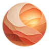
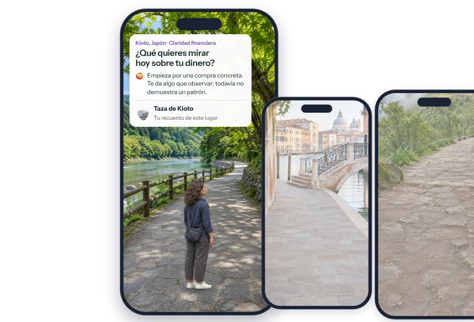
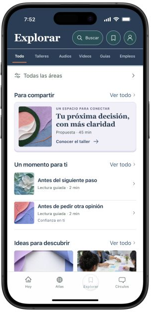

Paula M.Perfil de ejemplo
Me mudé hace poco. ¿Cómo empezaron a hacer amigas sin conocer a nadie?

elara Unirme a la listaCada día llegas a un lugar nuevo, reflexionas sobre algo que estás viviendo y te llevas una herramienta para usar en tu vida.Un lugar nuevo, una pregunta y una herramienta para tu vida.

Si esto te suena familiar
Elara te ayuda a ver dónde estás, qué está pidiendo atención y cuál es el siguiente paso pequeño.
Prueba una pregunta
Así es una práctica en Elara. Elige la respuesta que más se parece a ti.
Ejemplo · Claridad financiera
Alguien de tu familia te pide dinero. Quieres ayudar, pero todavía no sabes cuánto puedes aportar.
Dar un momento concreto para responder te permite revisar tus posibilidades sin dejar a la otra persona esperando.
Quieres ayudar. Decir que sí antes de revisar puede dejarte con un compromiso que todavía no sabes si puedes cumplir.
Toca una respuesta para ver qué aprendes con ella.
Es un ejemplo. Nada de lo que elijas o escribas se envía ni se guarda.
Lo que te llevas
Cada recuerdo guarda una frase que puedes volver a usar. Toca uno.
La frase de este recuerdo
Quiero ayudarte. Déjame revisar cuánto puedo aportar y mañana te respondo.
Mi kit personal 0

Demostración: en esta página no se guarda nada.
Seis áreas de tu vida
Claridad financiera. Observa una decisión sobre tu dinero y prepara una regla que tenga sentido para ti.
Encontrar tu propósito. Reúne pistas sobre lo que te importa y diseña una prueba pequeña antes de decidir.
Confianza en ti. Reconoce lo que sí sabes y practica revisar una decisión con razones.
Recuperar tu energía. Observa qué te da energía, qué te cuesta y prueba un ajuste posible.
Amor y límites. Distingue lo que puedes ofrecer y prepara una petición o un límite concreto.
Ritmo diario. Prueba una señal y un siguiente paso para retomar una rutina cuando cambia tu día.
Círculos
Elige un tema que estés viviendo, lee o pregunta. Tú decides cuándo participar.
Demostración con perfiles y mensajes de ejemplo. No son personas reales ni conversaciones en vivo.
Paula M.Perfil de ejemplo
Me mudé hace poco. ¿Cómo empezaron a hacer amigas sin conocer a nadie?
Una nueva ciudadConversación de ejemplo
Paula M.Perfil de ejemplo
Me mudé hace poco. ¿Cómo empezaron a hacer amigas sin conocer a nadie?
Sofía A.Perfil de ejemplo
Me ayudó volver al mismo lugar cada semana. La conversación empezó después de vernos varias veces.
Aquí no puedes responder: es una demostración.
Explorar
Te sirve para
Ordenar una decisión que tienes pendiente y salir con un siguiente paso escrito.
Recursos de ejemplo tomados de la versión de prueba.

Español primero
El peso de ser la hija mayor, la familia que llama, los dos mundos que habitas. Elara parte de ahí. También está disponible en inglés.
Una nota de nosotras
Lo veíamos en nuestra vida y en miles de mensajes: mujeres que por fuera parecen tenerlo todo resuelto y por dentro funcionan en vacío. No encontrábamos el lugar suave que necesitábamos, así que empezamos a construirlo. Elara es para ti. (La verdad, también para nosotras.)
 Mengxi WangProducto y diseño
Mengxi WangProducto y diseño Alejandra RamirezCreadora y comunidad
Alejandra RamirezCreadora y comunidadUn saludo de Alejandra, próximamente.